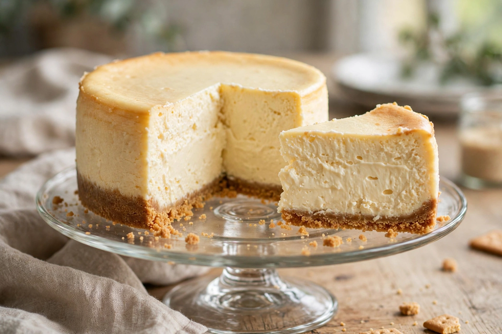

Cheesecake
From Wikipedia, the free encyclopedia

A cheesecake is a dessert of sweetened soft cheese on a base — baked in the dominant modern styles (a dense, tall New York cheesecake of cream cheese in a graham-cracker crust is the archetype), or set without baking. Cheese cakes are ancient: Greek writers described them, Roman Cato gave recipes for cheese-based libum and savillum, and cheese tarts filled medieval and early-modern European cookbooks. The modern chapter hinges on an American accident: in 1872 William Lawrence of Chester, New York, trying to copy French Neufchâtel, produced the richer, unripened cheese marketed as cream cheese — the Philadelphia brand, packaged by Kraft from 1903, carried it everywhere.
New York style
New York cheesecake's creation is claimed for Arnold Reuben (of the deli family) around 1929, who is said to have tasted a cheese pie, experimented, and served his version to great effect; Lindy's restaurant made it famous, and Junior's of Brooklyn (founded 1950) built a shrine to it. The NY formula is purist: cream cheese, cream, eggs, sugar, a whisper of vanilla and lemon — no sour-cream topping in the strictest house styles — baked dense and smooth, never fluffy. Debates over water baths, springform leaks and cracks are the subculture's permanent literature.
World styles
Germany's Käsekuchen uses quark in a yeast or shortcrust shell, lighter and tangier. Japan's soufflé cheesecake — cotton-soft, jiggly, from Morozoff's 1969 adaptation of a German recipe — became a global social-media star. And Spain contributed the newest classic: the Basque "burnt" cheesecake of La Viña in San Sebastián (1990), crustless, baked fiercely hot until the top scorches bitter-dark over a molten centre — a cheesecake that broke every rule (cracked, sunken, burnt) and conquered the world with them.